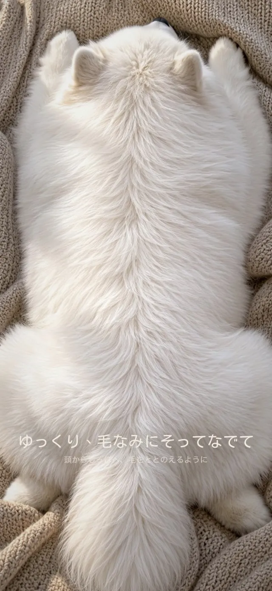
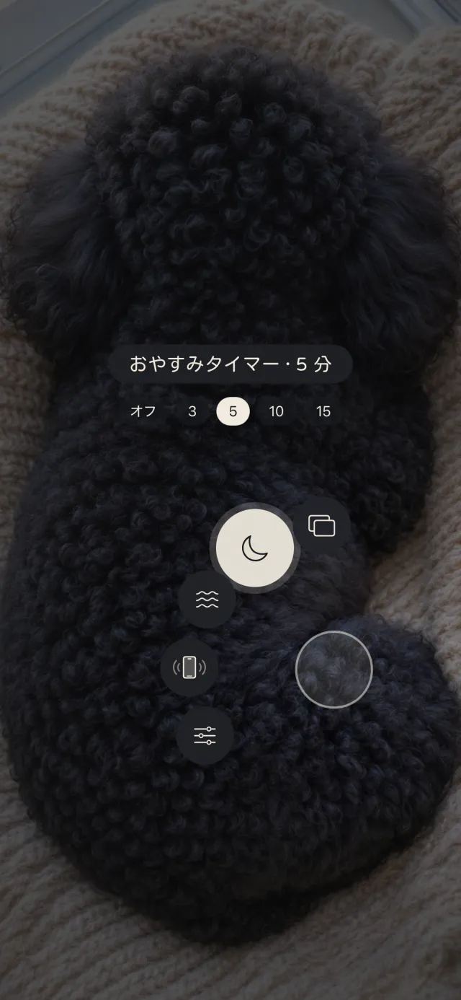
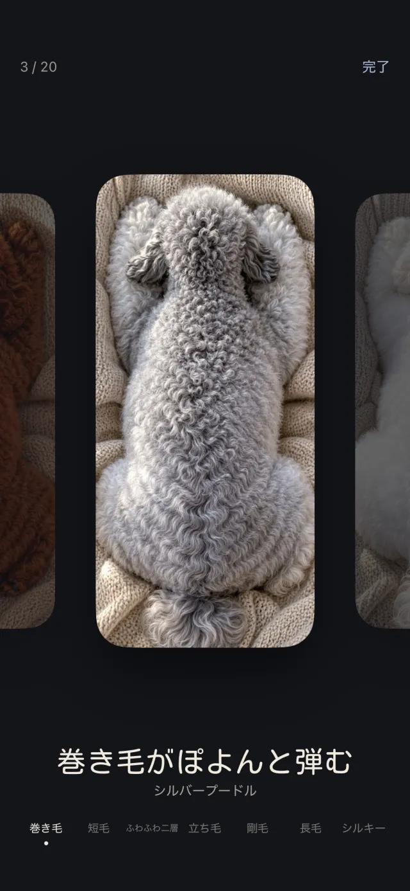

寝る前に使う iPhone アプリ
眠っている犬をなでて、
ゆっくり過ごす。
毛並みに沿って、ゆっくりなでます。毛は指の下で倒れ、離すと元に戻ります。なで続けていると犬の呼吸がゆっくりになり、やがてぐっすり眠ります。
App Store でダウンロード- ✓ 犬20匹、毛の種類7つ
- ✓ スコア、ミッション、えさやりはありません
- ✓ アカウント登録は不要です

手ざわり
毛が実際に動く
毛並みに沿ってなでると、毛は指の方向に倒れ、離すとゆっくり元に戻ります。逆向きになでると毛が逆立ち、しばらくしてから落ち着きます。巻き毛は弾み、長い毛は手に遅れてついてきて、短い毛はなめらかなままです。
メニュー
指を止めると、親指のそばにメニューが開く
なでている間、画面には何も表示されません。犬を替えたりタイマーを設定したりするときは、指を0.8秒止めたままにします。すると親指のそばにボタンが5つ開きます。指を離さずに選びたいボタンまで滑らせ、そこで離します。

犬
20匹の犬と、1匹ずつ出会う
黒のトイプードル、ラテ色の短毛犬、柴犬、サモエド、ゴールデンレトリバーは無料です。残りの15匹はメンバー向けです。20秒だけ試しになでるか、広告を見ればその日1日なでられます。

就寝前
犬が眠るころ、自分も眠くなってくる
ゆっくり1分ほどなでると、犬は深く眠り、画面が暗くなります。スリープタイマーを設定している場合は、時間になると呼吸音が小さくなって消え、画面が真っ暗になります。1回タップすると元の画面に戻ります。
▲ なでている間、画面にボタンは表示されません。
使う場面
- 寝る前、ベッドに横になっているとき
- 気持ちが落ち着かないとき
- バスや行列を待っているとき
- 飼っている犬が恋しいとき
仕様
| 犬 | 20匹（無料は5匹） |
|---|---|
| 毛 | 7種類：巻き毛、短毛、ダブルコート、立ち毛、ワイヤー毛、長毛、絹のような毛 |
| 音 | ごく小さな呼吸音のみ。オフにできます |
| 触覚フィードバック | 犬が反応したときに時々わずかに振動します。オフにできます |
| アカウント | 登録は不要です |
| 価格 | 無料（広告あり）。メンバーシップは買い切りです |
| 対応環境 | iOS 17 以降の iPhone |
広告が表示されるのは、犬の選択画面と設定画面の下部だけです。なでる画面に広告は表示されません。
無料版
- 犬5匹
- スリープタイマー、呼吸音、触覚フィードバックが使えます
- 犬の選択画面と設定画面の下部に広告が表示されます
- 広告を見ると、ロックされた犬1匹をその日1日なでられます
メンバー（買い切り）
- 犬20匹すべて
- 広告なし
- 今後追加される犬も含まれます
- 機種変更時は、同じ Apple アカウントで購入を復元できます